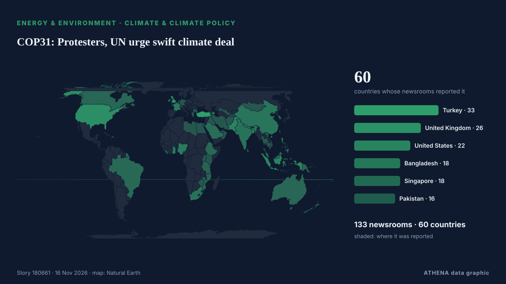

Énergie, ressources et environnement
SponsoriséPrésenté par  Cybernetics and Artificial Intelligence Lab Welcome to the Cybernetics and Artificial Intelligence Laboratory, established at the Department of Business Administration of the National and Kapodistrian University of Athens. The lab is headed by Professor Dimitrios Thomakos. The lab aims to do research that can be published in top venues. Our research uses tools and methods of Artificial Intelligence, and lies in the following areas: - Forecasting - Decision making - Cyber security - Finance We are always looking forward to collaborating with exceptional students!
Cybernetics and Artificial Intelligence Lab Welcome to the Cybernetics and Artificial Intelligence Laboratory, established at the Department of Business Administration of the National and Kapodistrian University of Athens. The lab is headed by Professor Dimitrios Thomakos. The lab aims to do research that can be published in top venues. Our research uses tools and methods of Artificial Intelligence, and lies in the following areas: - Forecasting - Decision making - Cyber security - Finance We are always looking forward to collaborating with exceptional students!
Les titres sont affichés en anglais, tels que publiés.

Climat et politique climatiqueProtesters, UN urge swift climate deal
Civil society groups from Bangladesh, Bhutan and Nepal call for predictable, grant-based adaptation funding. de The Business Standard (Bangladesh) (working feed)
| 3 nov. | 93 |
|---|---|
| 4 nov. | 99 |
| 5 nov. | 96 |
| 6 nov. | 60 |
| 7 nov. | 47 |
| 8 nov. | 55 |
| 9 nov. | 110 |
| 10 nov. | 110 |
| 11 nov. | 113 |
| 12 nov. | 90 |
| 13 nov. | 71 |
| 14 nov. | 37 |
| 15 nov. | 25 |
| 16 nov. | 0 |
Kiribati vice president Dr Teuea Toatu dies
Dr Teuea Toatu's passing was announced by Cabinet colleague Ruth Cross Kwansing on Sunday night. de RNZ National
'Unauthorised supertanker' carrying over 2M barrels of oil sinks in Hormuz: Iran
UKMTO says it was aware of a report by Indian shipping authorities of an attack on a tanker, but it was unclear if it was the same incident. de TRT World
CLIMATE CASH SHOWDOWN: Africa battles EU ‘delaying tactics’ at COP31 over $120bn climate adaptation lifeline
Albanese caught between climate ambition and political reality at COP31
PM Anthony Albanese urges countries to turn climate commitments into action, calling for greater investment in clean energy, faster electrification and climate finance for vulnerable nations. de TRT World
Nations grapple with loss of 1.5C target at UN climate summit
The world has already warmed by about 1.4°C above pre-industrial levels, with the UN warning in September that breaching the Paris Agreement’s 1.5°C threshold was imminent and unavoidable. de Free Malaysia Today
Nepal flood victims' families may wait up to a year for death certificates
KUALA LUMPUR: Families of Malaysians missing in the Nepal floods could face another three to 12 months, or longer, to obtain certificates of presumption of death, Malaysia Solidarity Families in Hope… de New Straits Times
Ukraine Strikes Samara Urals Oil Hub and Lipetsk-2 Airbase
The General Staff of the Armed Forces of Ukraine announced on Nov. de Kyiv Post
Singapore authorises first carbon project with Rwanda for international emissions offsetting
Through this, around 780,000 tonnes of CO2 equivalent is set to be mitigated between 2026 and 2030. de The Business Times
UN launches Disaster Risk Financing Platform at COP31 to make humanitarian responses faster and more predictable
The initiative aims to secure access to more than US$3 billion in risk financing to protect 75 million people from climate shocks by 2030. de UNICEF
Guinea expels 1,557 foreigners over illegal gold mining
Mass expulsions overwhelm neighbouring countries as Mali warns of a humanitarian crisis and rising regional security threats. de MINING.COM
Luis Felipe Henao Takes Over Colombia’s Earthquake Fund After Payroll Controversy
Colombian President Abelardo de la Espriella has appointed former Housing Minister Luis Felipe Henao to manage the Fondo Milagro, the trust responsible for financing reconstruction after the Aug. de Colombia One
Mayfair Substation first-phase power restoration 98% complete
City Power says it is working to restore electricity in areas supplied by Mayfair Substation. de SABC News
Respiratory illnesses rise in Gaza as winter arrives, WHO warns
The WHO warns of rising respiratory infections in Gaza as heavy rains flood displacement camps, worsening overcrowding and health risks this winter. de The New Arab
US diesel below $6 a gallon at 2-month low on easing tensions, weaker demand
NEW YORK: US diesel prices fell below $6 a gallon on average on Saturday after two months above that threshold, retreating from record highs as easing geopolitical tensions and seasonal demand… de Business Recorder
Iraq PM sacks officials over oil smuggling in pro-Iran group bastion
The Iraqi Prime Minister dismissed nine officials following an investigation into oil smuggling linked to the Iran-backed Kataeb Hezbollah group. de Arab News
Delhi overtakes Lahore as world's most polluted city as air quality drops
Pollution is a seasonal problem in many parts of northern India and neighbouring Pakistan. de Express Tribune
As smog hangs over Lahore, Pakistan’s new pollution squad races to douse stubble fires
Lahore’s new pollution squad is actively fighting smog by extinguishing fires caused by illegal stubble burning in Punjab. de Arab News
Sadiq Khan says climate policies helped secure three terms as London mayor
Speaking at COP31 in Antalya, Sadiq Khan highlights cleaner transport, pedestrianisation and urban planning as examples of how climate action can benefit cities and voters. de TRT World
Rosatom to increase workforce at Bushehr nuclear plant to 300
Russia’s state nuclear corporation Rosatom plans to increase its workforce at Iran’s Bushehr Nuclear Power Plant from the current 180 employees to 300 in the near future, as it moves to resume… de Tehran Times
Afghanistan's olive groves give farmers relief from climate crisis
The United Nations Climate Change Conferences (COP) are among the most important international forums for examining the impacts of climate change, coordinating global efforts to address the crisis… de Khaama Press
All Blacks v Wales: Live updates from the Nations Championship test in Cardiff
Cardiff once again is the scene of a historic defeat for the All Blacks. de New Zealand Herald
UN chief urges world to end fossil fuel addiction at COP31
UN chief António Guterres called for a new global climate justice agreement at COP31 on Wednesday, urging governments to tax fossil fuel companies to help countries bearing the brunt of a crisis they… de UN News
Fuel price freefall continues despite supply threats
Fuel prices are poised for another round of substantial cuts next week, continuing this week's massive rollbacks despite renewed threats to global oil supplies… de Daily Tribune
‘Crude but viable device’ made safe in Dublin
A "crude but viable" device found at a building in Merrion Square today has been made safe, gardaí have said. de RTÉ News
Iran, Turkiye call for stronger environmental cooperation
Tehran, IRNA — Iran and Turkiye have agreed to expand bilateral environmental cooperation, speed up the implementation of existing agreements, and share experience in building resilient cities and… de IRNA (English)
Germany’s solar power generation approaches record high
By Sept 27, German solar output had already reached 90.2 terawatt-hours, surpassing the 90 terawatt-hours generated for the whole of 2025. de Free Malaysia Today
Turkish investors show interest in buying 49% shares in Akkuyu project — Rosatom
The negotiations are underway, CEO Alexey Likhachev said. de TASS (English)
India should get energy first, decarbonise once richer, says Steven Koonin at HT Leadership Summit
The physicist says United Nations climate talks have failed to curb emissions or deliver promised finance. de Hindustan Times
PMIF26 concludes with major investment agreements; Pakistan reaffirms commitment to mineral value addition
Deals part of efforts to move away from exporting raw materials, unprocessed minerals. de Express Tribune
NNPC Ltd., Pipeline Professionals partner to boost infrastructure, indigenous capacity
Bennett Oghifo The Nigerian National Petroleum Company Ltd. de ThisDay (Nigeria)
Earthquake Of Magnitude 3.9 Strikes Shimla, No Damage Reported
According to the National Centre for Seismology, the earthquake struck around 9.50 pm at a depth of 10 kilometres. de NDTV
M.P. man dies after crude bomb disguised as rasgulla explodes in his mouth
Two men have been arrested in Dindori district after an acquaintance allegedly offered the victim a crude explosive used to kill wild boars, claiming it was a sweet. de The Hindu